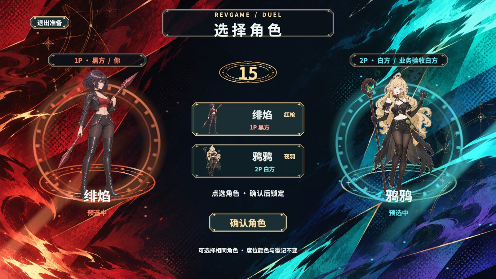
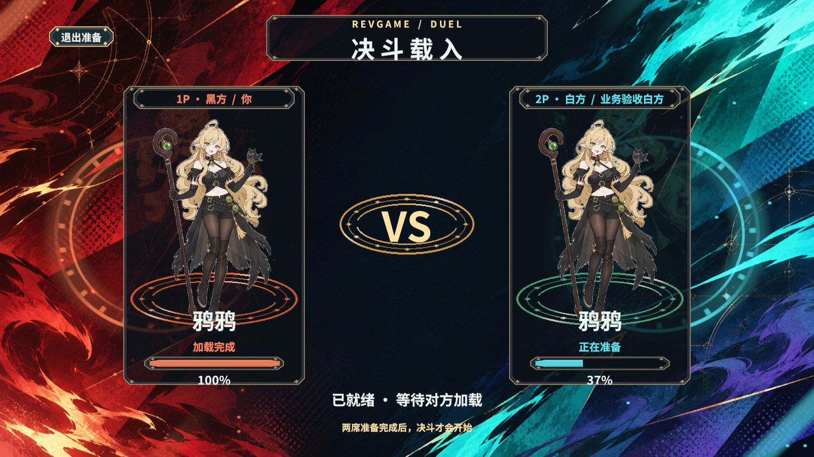
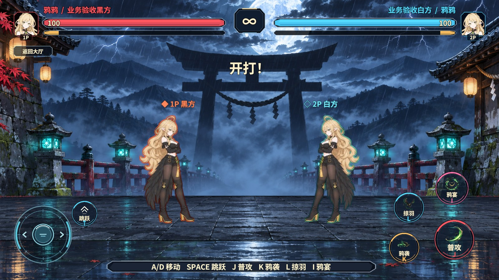
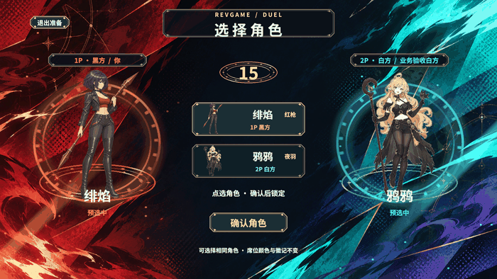

验收结果
| 检查 | 实际结果 |
|---|---|
| 角色与视觉 | 鸦鸦使用指定的 frame_00000.png，源图与 Unity PNG 字节一致。绯焰和无雨的红青裂隙底图使用图片生成；牌框、状态文字、符印和扫光分层。旧 PvP 面板已关闭，底图 Sprite 在真实 PC AB 中已打包且 Rift Shader 受支持。 |
| 15 秒与锁角 | 两席选角页可见后才开始计时。UTP 白方改变预选，黑方看到了变化；黑方真实点击按钮选角，两席均可锁定同角。人机回归在 5 秒仍可见未锁定，归零时保留最后预选，进入同角对局。 |
| 实际预加载 | 黑方在 Unity 场景激活门前报告 100%，隔离白方经真实 UTP 保持在 37%；活动场景是 PvpScene，原生仍第 0 帧。白方报告 100% 后进入 PvpDuelScene，两席 Ready 后才开始封帧和淡出加载页。 |
| 镜像与录像 | 两席角色贴图实际来自战斗内置图集。同角通过暖红/冷青描边和带文字的实心/空心徽记辨认。镜像角色第 20 帧检查点恢复，并重放到第 36 帧一致。 |
| 中途退出 | 实际点击加载页的退出准备按钮。两端清理后活动场景为 StartScene，预加载队列已释放，PvP 域已关闭。两份最终计划清理均通过，运行错误为 0。 |
| Fantasy KCP | 回环上的独立 Gate 与双 Session 通过预选同步、同角锁定、单席加载拒绝放行及双席 Ready；第 84 帧两端指纹 540483974，对账样本 3。 |
Game 画面




框架可行性与范围
RevUI 负责两张面板的打开和回收，DOTween 仅做显示；RevResManager 与图集租约保持首次画面和淡出期间的资源可用。原有 RevScene 只能等待本机，源仓新增 LoadWhenReadyAsync（bf4e21f）并导出到本工程，实测在对端 37% 时不会提前激活。
RevCLI 制作两张 Prefab、导表并构建 PC 与 Android 的 84 个资源包。RevMCP 用 rev_discover 核对运行时能力、rev_call 从 StartScene 冷启动，rev_run 分别执行 31 步及 27 步，均完成 7 项清理。UTP 用一端真实 Unity 场景与一端隔离白方，Fantasy KCP 验证双 Session。Android 只验证资源构建，未做真机或独立 Player 验收。